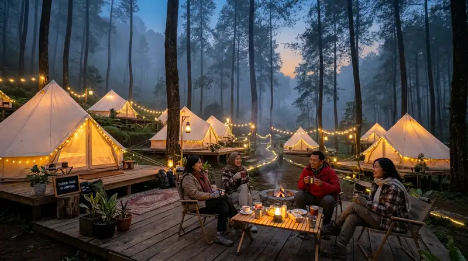

Tempat kemah Coban Rais Malang berada di Desa Oro-Oro Ombo, Kota Batu, dan menyediakan camping ground serta glamping di area hutan pinus.
Ringkasan Inti
- Coban Rais berlokasi di Dusun Dresel, Desa Oro-Oro Ombo, Kota Batu, sekitar 15-20 menit dari pusat kota dengan kendaraan pribadi (Indonesia Travel, halaman destinasi 2026).
- Tiket masuk kawasan Coban Rais tercatat mulai Rp10.000 per orang, dan paket glamping dilaporkan mulai Rp1.200.000 (Orami, Juli 2024; JawaPos, 2025).
- Pilihan menginap umumnya terbagi menjadi camping ground dengan tenda sendiri dan glamping dengan tenda siap pakai.
- Udara pegunungan dan hujan membuat persiapan perlengkapan serta pengecekan cuaca sangat penting.
- Harga, jam operasional, dan aturan dapat berubah, sehingga konfirmasi ke pengelola sebelum berangkat tetap diperlukan.
Apa Itu Tempat Kemah Coban Rais Malang?
Tempat kemah Coban Rais adalah area berkemah di kawasan wisata Coban Rais, Kota Batu, yang berpadu dengan hutan pinus, jalur trekking, dan air terjun.
Nama “Malang” pada kata kunci ini merujuk pada Malang Raya. Wilayah tersebut mencakup Kota Malang, Kabupaten Malang, dan Kota Batu. Secara administratif, Coban Rais berada di Kota Batu, bukan di Kabupaten Malang.
Kawasan ini populer bagi keluarga, pasangan, dan komunitas yang ingin menginap di alam tanpa mendaki gunung. Tempat kemah di sini cocok bagi pemula karena akses menuju kawasan relatif mudah dan sejumlah pengelola menyediakan tenda siap pakai.
Batasannya perlu dipahami sejak awal. Cuaca di dataran tinggi Batu bisa berubah cepat, malam hari terasa dingin, dan ketersediaan fasilitas berbeda antar pengelola area kemah.
Di Mana Lokasi Tempat Kemah Coban Rais?
Tempat kemah Coban Rais berlokasi di Dusun Dresel, Desa Oro-Oro Ombo, Kota Batu, Jawa Timur, dan dapat ditempuh sekitar 15-20 menit dari pusat Kota Batu.
Informasi lokasi ini bersumber dari halaman destinasi Indonesia Travel yang dikelola pemerintah. Waktu tempuh dihitung dengan kendaraan pribadi dan dapat bertambah saat akhir pekan atau musim liburan karena kepadatan lalu lintas.
Dari Kota Malang, pengunjung umumnya menuju Kota Batu terlebih dahulu, lalu mengikuti papan petunjuk ke kawasan Coban Rais. Pengunjung dari Surabaya biasanya melewati jalur menuju Batu dan melanjutkan ke wilayah Oro-Oro Ombo. Gunakan aplikasi peta dengan kata kunci “Coban Rais” atau nama pengelola camping yang akan dipilih.
Rincian rute, moda transportasi, dan waktu tempuh dari berbagai kota dibahas terpisah di panduan rute dan akses menuju Coban Rais.
Apa Saja Pilihan Menginap di Coban Rais?
Pilihan menginap di Coban Rais umumnya berupa camping ground dengan tenda sendiri atau sewa tenda, dan glamping dengan tenda lengkap kasur serta fasilitas tambahan.
Camping ground cocok bagi pengunjung yang membawa perlengkapan sendiri dan ingin biaya lebih hemat. Pengunjung biasanya mengurus tenda, alas tidur, penerangan, dan alat masak sendiri, kecuali pengelola menyediakan sewa.
Glamping adalah konsep berkemah dengan kenyamanan lebih tinggi. Menurut laporan JawaPos (2025), salah satu paket glamping di kawasan ini mencakup sewa area, tiket masuk, tenda, kasur busa, bantal, sprei, selimut, lampu tenda, meja, kursi, alat masak, dan kayu bakar dengan harga mulai Rp1.200.000.
Setiap pengelola menetapkan paket, kapasitas, dan aturan berbeda. Pengunjung sebaiknya membandingkan isi paket, bukan hanya harga, sebelum memesan.

Pendar lampu hangat di area tenda glamping Coban Rais menciptakan suasana malam yang menawan.
Berapa Biaya Berkemah di Coban Rais?
Biaya berkemah di Coban Rais bergantung pada jenis akomodasi: tiket kawasan tercatat mulai Rp10.000 per orang, sedangkan paket glamping dilaporkan mulai Rp1.200.000.
Orami (Juli 2024) mencatat tiket masuk Coban Rais Rp10.000, parkir motor Rp5.000, dan parkir mobil Rp10.000. Tiket Batu Flower Garden tercatat Rp25.000 dan ojek menuju lokasi tersebut Rp10.000. Angka ini adalah catatan periode tertentu dan sangat mungkin berubah.
Biaya tambahan yang sering muncul meliputi sewa tenda, makanan, kayu bakar, dan tiket wahana atau spot foto. Pada akhir pekan dan musim liburan, tarif paket biasanya naik.
Untuk rincian komponen biaya dan cara menghemat, baca panduan harga camping Coban Rais.
Fasilitas Apa yang Tersedia di Area Kemah dan Sekitarnya?
Fasilitas di kawasan Coban Rais mencakup area parkir, toilet, musala, warung makan, dan kios oleh-oleh, sedangkan fasilitas area kemah berbeda tergantung pengelola.
Indonesia Travel menyebut kawasan Air Terjun Coban Rais memiliki parkir, toilet, musala, warung makan, dan kios oleh-oleh. Fasilitas tersebut mendukung kunjungan keluarga.
Pada paket glamping, JawaPos (2025) melaporkan adanya toilet dengan pemanas air, colokan listrik, WiFi, musala, dan kafe di salah satu pengelola. Tidak semua camping ground menyediakan fasilitas serupa, sehingga pengunjung perlu menanyakan kondisi toilet, sumber air, listrik, dan keamanan sebelum memesan.
Kapan Waktu Terbaik Berkemah di Coban Rais?
Waktu terbaik berkemah di Coban Rais umumnya hari kerja pada musim kemarau, karena kawasan lebih sepi dan risiko hujan deras lebih rendah dibanding musim hujan.
Pada musim hujan, jalur trekking dan area tenda bisa licin, dan debit air sungai dapat naik. Pada akhir pekan dan libur panjang, area parkir dan camping ground cenderung ramai, sehingga pemesanan lebih awal sangat disarankan.
Jam operasional kawasan wisata air terjun tercatat 07.00-15.00 WIB menurut Indonesia Travel. Jam tersebut berlaku untuk kunjungan harian. Jadwal check-in dan check-out area kemah dapat berbeda, jadi konfirmasi langsung ke pengelola camping tetap perlu dilakukan.
Apa yang Bisa Dilakukan di Sekitar Area Kemah?
Kegiatan di sekitar area kemah Coban Rais meliputi trekking ke air terjun, menikmati hutan pinus, berfoto di spot wisata, dan berkunjung ke Batu Flower Garden.
Air terjun Coban Rais dapat dicapai lewat jalur trekking. Sumber yang berbeda menyebut waktu tempuh sekitar 30 sampai 40 menit, sehingga pengunjung sebaiknya memperkirakan waktu secara fleksibel. Informasi tinggi air terjun juga berbeda antar sumber, jadi angka pasti tidak dipakai dalam panduan ini.
Batu Flower Garden disebut Indonesia Travel sebagai salah satu daya tarik populer di kawasan ini. Pada malam hari, aktivitas yang umum dilakukan adalah menyalakan api unggun, memasak, dan menikmati pemandangan lampu Kota Batu dari ketinggian, seperti yang dilaporkan JawaPos (2025).
Bagaimana Memilih Camping Ground atau Glamping?
Pilih camping ground jika membawa perlengkapan sendiri dan ingin hemat, dan pilih glamping jika menginginkan kenyamanan, tenda siap pakai, serta fasilitas yang lebih lengkap.
Berikut parameter perbandingan yang bisa dipakai:
- Anggaran: camping ground umumnya lebih murah, sedangkan glamping memiliki biaya paket lebih tinggi.
- Pengalaman: camping ground melatih kemandirian, sedangkan glamping lebih ramah bagi anak, lansia, dan pemula.
- Perlengkapan: camping ground menuntut persiapan tenda dan alat masak, sedangkan glamping biasanya sudah termasuk.
- Kenyamanan cuaca: glamping umumnya memberi perlindungan lebih baik dari dingin dan hujan, meski tetap bergantung pada kualitas tenda.
- Fleksibilitas: camping ground memberi kebebasan mengatur kegiatan, sedangkan paket glamping kadang punya aturan jam dan fasilitas tertentu.
Keluarga dengan balita sebaiknya memprioritaskan toilet bersih, air hangat, dan akses kendaraan dekat area tenda.
Apa Kesalahan Umum Saat Berkemah di Coban Rais?
Kesalahan umum berkemah di Coban Rais meliputi tidak mengecek cuaca, membawa pakaian kurang hangat, datang terlambat, dan tidak mengonfirmasi harga serta fasilitas.
Kesalahan lain adalah mengabaikan aturan kebersihan. Sampah yang ditinggalkan merusak hutan pinus dan sungai, sehingga pengunjung perlu membawa kantong sampah sendiri. Api unggun juga hanya boleh dinyalakan di tempat dan dengan izin pengelola karena area hutan rawan kebakaran.
Kesalahan berikutnya adalah memaksa trekking saat hujan atau menjelang gelap. Jalur yang licin meningkatkan risiko cedera, terutama bagi anak-anak.
Bagaimana Tips Berkemah yang Aman dan Nyaman?
Berkemah aman dan nyaman di Coban Rais berarti memesan lebih awal, membawa pakaian hangat, mengecek cuaca, mematuhi aturan pengelola, dan menjaga kebersihan area.
Berikut tips praktis:
- Hubungi pengelola untuk memastikan harga, kapasitas, jam masuk, dan fasilitas terbaru.
- Datang sebelum sore agar tenda terpasang sebelum gelap.
- Simpan makanan dalam wadah tertutup dan jangan tinggalkan makanan terbuka di sekitar tenda.
- Bawa power bank dan senter karena sinyal serta listrik tidak selalu stabil.
- Beri tahu keluarga atau teman tentang lokasi dan jadwal kepulangan.
Daftar barang yang perlu dibawa tersedia di panduan perlengkapan camping Coban Rais.
FAQ Tempat Kemah Coban Rais Malang
Tidak. Coban Rais berada di Desa Oro-Oro Ombo, Kota Batu, Jawa Timur. Kota Batu termasuk kawasan Malang Raya, sehingga wisatawan sering menyebutnya sebagai wisata Malang.
Orami mencatat tiket masuk Coban Rais Rp10.000 per orang pada Juli 2024. Tarif dapat berubah, sehingga pengunjung perlu memastikan harga terbaru ke pengelola.
Ya. JawaPos (2025) melaporkan paket glamping di kawasan Coban Rais dengan harga mulai Rp1.200.000. Paket dan harga berbeda antar pengelola.
Pada umumnya bisa di camping ground, tetapi aturan berbeda antar pengelola. Konfirmasi dahulu apakah tenda pribadi diizinkan dan berapa biaya sewa area.
Cocok dengan persiapan yang baik. Pilih area dengan toilet bersih, akses kendaraan dekat, dan perlengkapan hangat. Hindari trekking saat hujan atau menjelang gelap.
Dari pusat Kota Batu, perjalanan dengan kendaraan pribadi sekitar 15-20 menit menurut Indonesia Travel. Gunakan aplikasi peta dengan kata kunci Coban Rais.
Kesimpulan Praktis
Tempat kemah Coban Rais Malang cocok bagi pengunjung yang ingin berkemah di hutan pinus Kota Batu dengan akses yang relatif mudah. Pilih camping ground untuk anggaran hemat atau glamping untuk kenyamanan lebih. Pastikan harga, fasilitas, dan jam operasional dikonfirmasi ke pengelola sebelum berangkat.